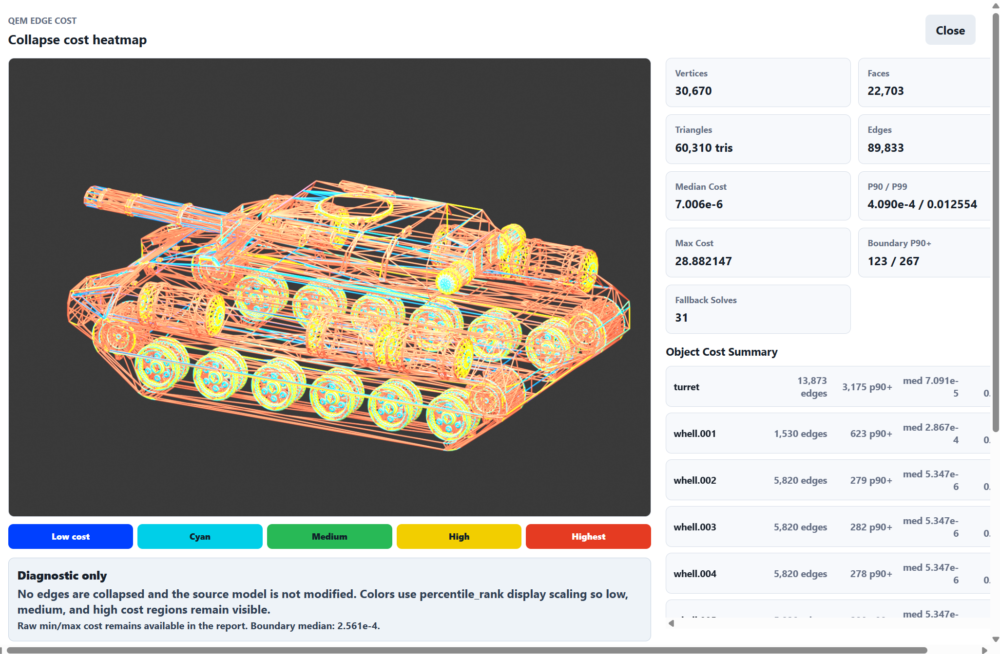
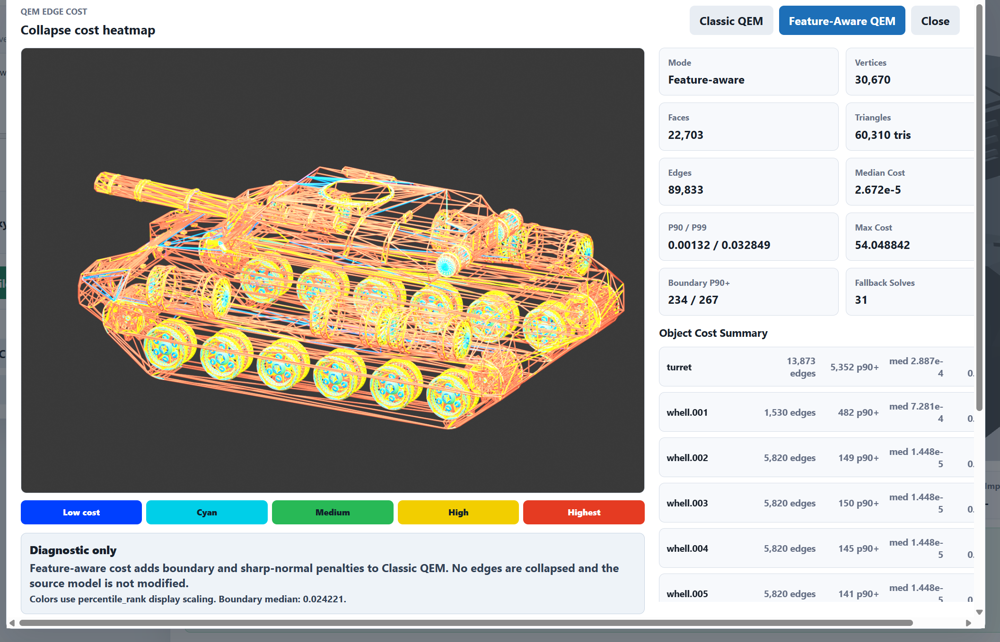
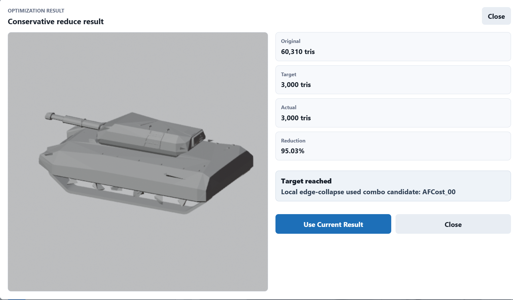
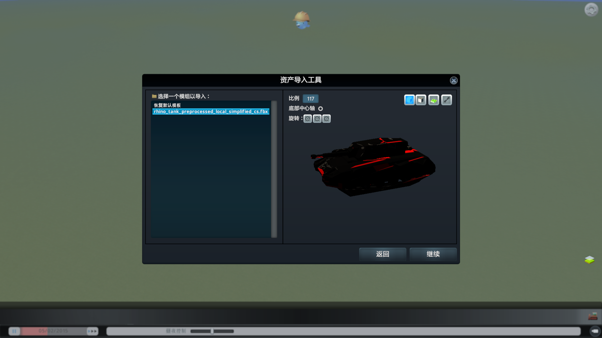

由自定义天际线资产而来的自动减面工具（V2：Local Simplification Executor）
Update Optimizer
续v1版本
但是吧，这样也不是一个办法，细小的纹理识别还是很差。再让 AI 搞下去，它就要针对坦克的样式去硬编码地写 if else 了。
目前的方案如果再继续去做 stage 4、stage 5、stage 6，就会变得像 if else 堆起来的 rule-based 自动驾驶规控系统，庞大却又永远有解不完的问题。毕竟我当规控工程师这么久了我能不知道么。
于是让 AI 大概搜了一些现行方案。
网格优化方案
Classic Mesh Simplification
代表方法：
- QEM
- Progressive Mesh
- Edge Collapse
- Lindstrom-Turk
核心流程：
1 | |
优点：
- 快
- 成熟
- 工业标准
- Blender / Unity / Unreal 都有影子
缺点：
- 不理解语义
- 不知道什么是炮管
- 不知道什么是轮子
如果我没理解错的话，还是聚类。
Feature-Aware Mesh Simplification
代表方法：
- Feature Sensitive Metric
- Feature Preserving QEM
- FA-QEM
- Curvature-aware QEM
核心流程：
1 | |
这个看上去就是在求解一个最优化问题，目标是简化网格，同时保留特征。
Neural Mesh Simplification
代表方法：
- Neural Mesh Simplification (CVPR)
- GNN Simplification
- Learned Edge Collapse
核心流程：
1 | |
这个就是 AI 方案了，用高模和低模的对比来训练 AI 模型，预测出哪些区域应该保留。
Region / Cluster Simplification：优化范围
前面三条路线主要在研究怎么简化网格，但是在此之前，还可以先把模型划分区域。
它解决的是：
1 | |
而不是：
1 | |
即：
1 | |
而不是：
1 | |
也就是说，它可以和上面的方法任意组合。
Region
核心思想：
1 | |
先将模型划分为具有结构意义的区域。
然后：
1 | |
例如：
- 车体
- 炮塔
- 炮管
- 履带
- 轮组
可以采用不同的简化策略。
优点：
- 更符合模型语义
- 容易保留主体结构
- 适合硬表面模型
Cluster
代表：
- Nanite
- Cluster Decimation
- HLOD
核心思想：
1 | |
先把 Mesh 划分为大量小 Cluster。
然后：
1 | |
再构建层级结构。
QEM 方案
Garland & Heckbert 1997《Surface Simplification Using Quadric Error Metrics》
很短，就讲了一件事情：
1 | |
就是用 Quadric Error Metric（QEM），点到平面距离的平方。
模型本来就是一堆三角形。 一个顶点附近有很多三角形。 如果把这个顶点移动到某个新位置：
$$ v’ $$
那么它偏离原始表面的程度是多少？
用这个点到周围以他原位置为顶点的几个三角形平面的距离的平方和来表示。
平面：
$$ p = [a, b, c, d]^T $$
归一化了：
$$ a^2 + b^2 + c^2 = 1 $$
到单个平面的距离的平方是：
$$ d^2 = (v^T p)(p^T v) $$
$$ Error(v’) = d_1^2 + d_2^2 + d_3^2 + d_4^2 $$
$$ Error(v’) = v^T (K_1 + K_2 + K_3 + K_4) v = v^T Q v $$
这就是移动一个点的代价。而如果这个点在原始的位置的话，那么他完全就在和他相邻的几个面上，这个 cost 就是 0。（这几个平面的方程用的还是移动前的点。）
如果是删除边呢？其实就是把边的两个顶点移动到一起：
$$ Q_{new} = Q_1 + Q_2 $$
看上去其实就像让每个面做一个引力场，这样这个 cost 在移动的时候，是被附近的引力场均匀拉扯。
坍缩边的时候不再需要用规则去写个平均什么的，而是求解一个最优位置：
$$ \bar{v} = \arg\min_v v^T Q v $$
这个是一个典型的二次型，对于每个边来说，两个顶点各自的相邻面都一定是知道的，那么矩阵 $Q$ 就可以得知，进而可以求解最优问题。
这里点的坐标要写成齐次坐标，$Q$ 作为平面方程的系数向量得到的矩阵，是 $4 \times 4$ 的，但是空间点的坐标向量是 $3 \times 1$，所以最后补了 $1$，来让维度相同，这样 $v^T Q v$ 才能得到 $ax + by + cz + d$。
求最优则是简单的线性代数知识：
$$ Q = \begin{bmatrix} A & b \\ b^T & c \end{bmatrix} $$
$$ E(x) = x^T A x + 2 b^T x + c $$
最后求解：
$$ Ax = -b $$
唯一需要额外特殊考虑的就是如果 $A$ 是奇异的，也就是说，这个点的邻面是共面（法向量一样又过同一个点）。
这个时候他的方法就是：
If this matrix is not invertible, we attempt to find the optimal vertex along the segment (v_1v_2). If this also fails, we fall back on choosing (\bar{v}) from amongst the endpoints and the midpoint.
三维优化不了就二维，二维不行就直接中点吧。

不过看图明显会发现一些问题，QEM可能并不适合我们。不过来都来了，顺便看一眼FA QEM
FA-QEM
原版 QEM 只看几何平面误差，面对现代生成 / 扫描 mesh 时，容易丢边界、锐边、法线细节和纹理外观。FA-QEM 把这些特征也编码进 collapse cost。论文发表于 CVPR 2026 Workshop 3D4S，主题就是 noisy / non-manifold / generated / real-world assets 的快速鲁棒简化。
FA-QEM 的每个顶点的 cost 变成了：
$$ cost_{total}(v’) = cost_{gf}(v’) + w_{area} \cdot cost_{area}(v’) $$
$$ Q_{gf} = Q_{base} + Q_{boundary} + Q_{normal} $$
Q_base
原版 Garland 的 QEM 是：
$$ Q = \sum K_p $$
FA-QEM 改成 area-weighted：
$$ Q_{base}
\sum_{p \in planes(v_i)} w_{plane\\_area} \cdot A_p \cdot K_p $$
大的平坦三角形一般属于低频区域，应该允许更激进地简化；小三角形往往对应局部细节、曲率变化、噪声或纹理结构，所以它们的误差权重相对更高。
Q_boundary
$$ Q_{boundary}
w_{boundary} \cdot \kappa \cdot (p_1p_1^T + p_2p_2^T) $$
这个是要求点不要破坏边界方向。
Q_normal
$$ Q_{normal} = w_{normal} \cdot pp^T $$
$$ p = [n_x, n_y, n_z, -n \cdot v] $$
而是：
顶点切平面。
所以是用来保法向的。

不过这里立刻就能发现一个问题，我们的需求是什么，这个 cost 又是在做什么？
举个例子，如果我们是一个大正方体，其中有一个面上有一个小尖尖，那么按照这个 cost 的设计，这个尖尖的 cost 应该会比大正方体的 cost 要高，但是这显然不合理。因为我们的需求是希望这个尖尖作为一个不重要的特征被清除掉。
用 AI 大哥总结的话讲，我们真正想保留的是 Silhouette 而不是 Curvature。
比如说轮毂细节： 虽然几何重要，但是视觉不重要
调整方案
回到真正的问题，我们希望的是： 输入：
1 | |
希望得到：
1 | |
同时：
1 | |
而不是：
1 | |
所以我们真正想优化的是：
1 | |
而不是：
1 | |
和AI大哥讨论的时候，即使再三和大哥说我们要的不是保留局部细节，相反，是想把这些无用的细节清除掉，但是大哥还总是能给我整出来小尺度保护，一不留神就跑偏。
比如 Center-surround 原理：
$$ S(v,\sigma)=\left|G(H,\sigma)-G(H,2\sigma)\right| $$
H
是 mean curvature
两者相减：
$$ \left|G(H,\sigma)-G(H,2\sigma)\right| $$
意思是：
1 | |
想想我们要做的是什么吧。
AI老师的回复：
我们当前减面主执行手段是边坍缩类，不是“坍缩面”。
代码里真正做减面的地方用的是 Blender Decimate modifier：
1 | |
这类 collapse 本质上是 edge/vertex collapse：通过合并顶点、折叠边来减少三角形。
但 AssetForge 现在的流程里还有两类“面级操作”：
-
Preprocess
- limited_dissolve
- 主要清掉共面/低角度冗余面
- 不是主减面 executor
-
Stage 3 detail cleanup
- 会 delete polygons / limited dissolve polygons
- 这是局部清理小面片/候选面
- 也不是最终统一的 collapse cost executor
所以更准确地说：
1 | |
我建议最终给边 cost，不是面 cost。
原因很直接：如果最后的 executor 是 edge collapse，那么每次真正要决定的是：
$$ collapse\ edge\ e=(u,v)\ ? $$
所以最终 cost 最自然应该是：
$$ C(e) $$
而不是：
$$ C(face) $$
推荐结构是：
1 | |
比如：
$$ C_{final}(e=(u,v)) = C_{QEM}(e) \cdot W_{importance}(e)
- P_{boundary}(e)
- P_{sharp}(e) $$
其中：
$$ W_{importance}(e) = f(\max(I(u), I(v)), \max(S(u), S(v))) $$
I 可以来自 scale persistence，S 可以来自 tiny detail / center-surround。
面 cost 不是没用，但它更适合做证据图/解释图/区域候选，例如：
- 哪些三角面属于 tiny detail candidate
- 哪些区域应该保护
- 哪些区域可以 aggressive reduce
但最终 collapse 决策最好还是边 cost。否则你会遇到一个不匹配：面说“这里可删”，但 executor 需要知道“哪条边先坍缩、坍到哪里、会不会破坏边界”。
引用结束
一下突然不知道该选什么样的score，不如把几种先画出来看看


以及组合起来的score

然后打算从这些score中挑选几个试试塌边减面。
Local simplification executor
有了score以后，接下来要做的就是按score去塌边减面。
于是给agent布置任务：
1 | |
这就是后续真正的 QEM as executor 或 custom edge-collapse executor。未来任何评分函数（QEM、Persistence、TinyDetail、LogQEM、D/P 等）都可以直接插进去测试。
简化原则和流程
Local simplification executor 的目标，是把前面 heatmap diagnostics 和 combo score 产生的“哪里可以删”的判断，真正变成一个可执行的 edge-collapse 减面流程。
整体可以理解成下面这条链路：
flowchart TD
A["输入 mesh"] --> B["从 combo score 得到静态删除倾向 StaticPrior(e)"]
B --> C["初始化 Local MeshState"]
C --> D["为每条 edge 计算 HybridCost(e)"]
D --> E["放入 priority queue"]
E --> F["pop 当前最适合 collapse 的 edge"]
F --> G["QEMPlacement 计算落点"]
G --> H{"局部合法性检查"}
H -- "失败" --> I["跳过 entry / 记录 skipped_invalid_edges"]
I --> E
H -- "通过" --> J["执行 edge collapse"]
J --> K["删除退化三角形，更新邻接关系"]
K --> L["只重算局部邻域 edge 的 HybridCost"]
L --> M{"达到目标 triangle count？"}
M -- "否" --> E
M -- "是" --> N["输出 simplified mesh 和 report.json"]
1 | |
StaticPrior：静态删除倾向
前面 heatmap diagnostics 和 combo score 产生的是静态删除倾向：
1 | |
它表达的是：这条 edge 所在区域是不是更像可牺牲的小细节、冗余结构、低重要度区域。
所以它的语义是：
1 | |
这和 executor 里的 cost 方向相反。priority queue 取的是最低 cost：
1 | |
因此 combo score 不能直接作为 cost 使用。它必须先作为 prior，再和当前几何风险合成 HybridCost。
DynamicQEMCost：当前几何风险
如果只按 StaticPrior 删除，会出现一个问题：初始 score 只知道“哪里像小细节”，但不知道“当前这一刀会不会把模型撕坏”。
edge collapse 是迭代过程。每 collapse 一条边之后，局部拓扑都会改变：
1 | |
所以每次选择 edge 时，都必须看当前 mesh state 下的几何代价。
现在这部分用的是 QEM：
1 | |
它表达的是：在当前 mesh 状态下，把这条 edge collapse 到 QEMPlacement 给出的落点，会产生多大的几何误差。
HybridCost：最终进入 priority queue 的排序值
当前 executor 真正放进 priority queue 的不是 StaticPrior，也不是纯 QEM，而是 HybridCost：
1 | |
含义是：
1 | |
所以最先被 collapse 的 edge 应该同时满足：
1 | |
这也是当前 Local simplification executor 和单纯 QEM、单纯 heatmap score 的区别。
QEMPlacement：统一落点策略
当前 PlacementProvider 使用 QEMPlacement。
对 edge：
1 | |
先合并两个端点的 quadric：
1 | |
然后在当前 edge 附近寻找 QEM error 最小的位置作为 collapse 落点。
这里有一个重要约束：落点不能随便飞到很远的地方。之前出现过远距离飞边，本质上就是 placement 或 validation 没有把落点限制在合理局部范围。现在 QEMPlacement 会在当前 edge segment / midpoint / endpoints 等候选里取更稳的结果，并且 validation 会拒绝离当前 edge 太远的 placement。
Collapse validation：每一刀都要局部验合法性
priority queue pop 出来的 edge 不能直接删。它必须先通过局部验证。
当前主要检查：
1 | |
如果检查失败，这条 heap entry 会被跳过，计入 skipped_invalid_edges。
这一步很关键。StaticPrior 只表示“想删”，HybridCost 只表示“排序上合适”，但最终能不能删，必须由 validation 决定。
Local MeshState：为什么只更新局部
如果每 collapse 一条 edge 后都重建全局边表、全局 QEM、全局 score，速度会非常差。
当前 executor 维护自己的 local mesh state：
1 | |
collapse 执行时只改写受影响的 faces 和 edges：
1 | |
远处没有被影响的 edge 不重算。
这就是 local simplification executor 的核心性能原则：
1 | |
Lazy priority queue
priority queue 也不全量重建。
每条 edge 有一个 version：
1 | |
局部更新时，受影响 edge 会以新 version 重新入队。旧 entry 留在 heap 里。之后 pop 到旧 entry 时，如果发现 edge 已不存在、端点已死亡、version 过期，就直接跳过。
这叫 lazy invalidation。
它避免了昂贵的 heap 删除和全量重建。
StaticPrior 的继承：新 edge 怎么办
combo score 是在初始 mesh 的 edge 上算出来的。但 collapse 之后会产生新 edge。新 edge 可能没有原始 score。
如果新 edge 没有 score 就跳过，深度减面会越来越失真。因此当前 executor 给每个当前 vertex 维护 lineage：
1 | |
collapse 时：
1 | |
当新 edge 找不到原始 edge prior 时，就从两端点 lineage 映射 prior：
1 | |
这样静态删除倾向可以随着 collapse 传播，而不是只在第一轮有效。
2-ring independent-set batching
基础 edge collapse 是一条一条删。这样最稳，但速度偏慢。
有些 edge 相距很远，互相不会影响，可以同一轮处理。于是现在 executor 加了一个保守的 2-ring independent-set batching。
一条 edge 的 2-ring 大致是：
1 | |
同一批 batch 里的 edge 必须满足：
1 | |
这样可以避免两个 collapse 同时修改同一片局部拓扑。
当前采用窗口式 batch：
1 | |
也就是说，每轮只从 heap 顶部看一个小窗口。能选出多个互不冲突的 edge 就批量 collapse；选不出来就少量甚至单条 collapse，不强行凑满 batch。
这个设计比盲目 batch 安全，也避免为了凑满 batch 反复扫描大量冲突候选。
测试效果
看上去是减面了，但是车轮被减的太过分了

也就是说，他现在没法判断轮子是轮子还是无用的小结构。
至于贴图嘛。。非常糟糕

修复了一版终于好了，不管怎么说，比 V1 版本的软件还是强不少的。